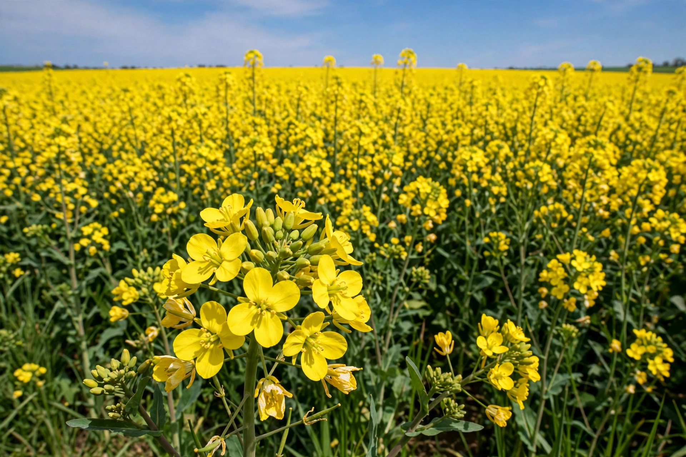

Brassica napus, commonly known as rapeseed (also swede rape, oilseed rape), is a bright-yellow flowering member of the family Brassicaceae, cultivated mainly for its oil-rich seed, the third-largest source of vegetable oil and second-largest source of protein meal in the world.

An annual or biennial herb up to 100 cm, with pinnatifid leaves and four-petalled yellow flowers. It is an amphidiploid hybrid between B. oleracea and B. rapa.
In Canada and elsewhere low-erucic, low-glucosinolate varieties are called canola. Oil is used for food, biodiesel, and lubricants; meal feeds livestock. Major producers include Canada, China, India, and the EU. Related: Canola, Brassica, Mustard plant.
An important early pollen source for bees, but also a persistent volunteer weed.